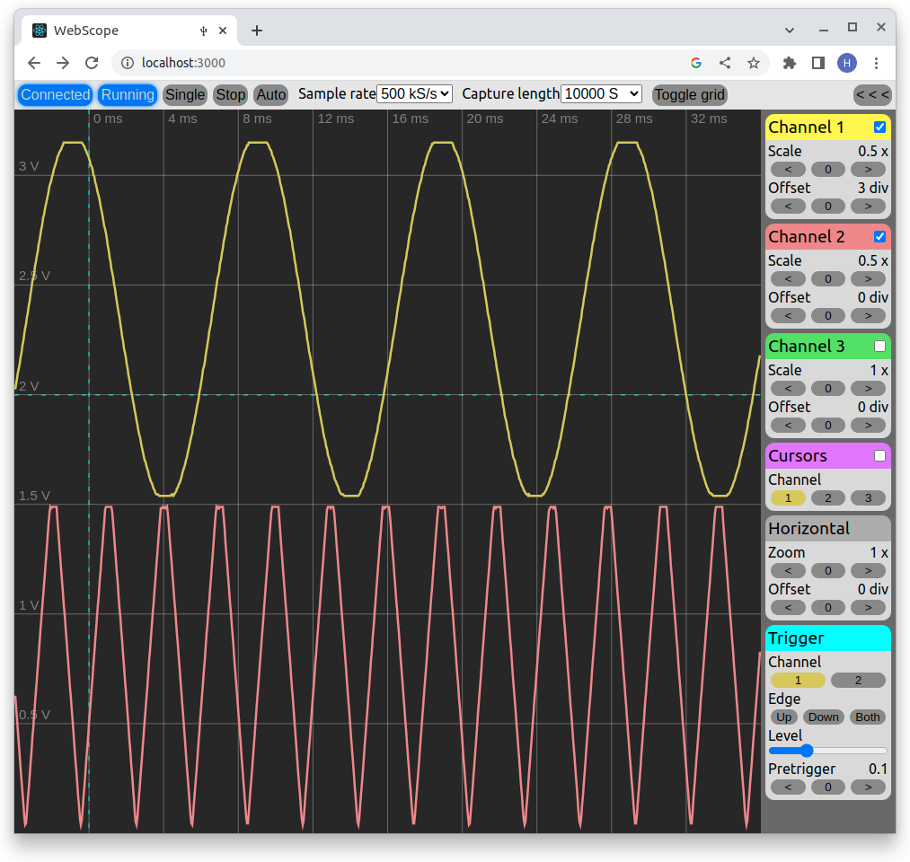

About Webscope

About
Webscope allows you to use your Raspberry Pi Pico as an oscilloscope. Webscope consists of two parts:
the firmware, which runs on your Pico and the GUI, which runs in your browser. Since the GUI
is browser-based, it runs on Windows, Mac and Linux and there is no need to install any software on your computer.
Technical overview
- Three analog channels
- Maximum 500kS/s total sampling rate
- 8 bit sampling resolution
- Maximum 200kS total capture depth
Pinout
The maximum voltage on the input pins is 3.3V!
- Channel 1: Pin 31 (GPIO26)
- Channel 2: Pin 32 (GPIO27)
- Channel 3: Pin 34 (GPIO28)
Don't forget to connect ground. The closest GND is on pin 33.
Firmware installation
Before using Webscope, it is necessary to flash your Raspberry Pi Pico with the Webscope firmware.
If you have not done it yet, here is how you can do it:
- Download the firmware here.
- If your Raspberry Pi Pico is connected to your computer, disconnect it.
- Press and hold the user button on the Pico.
- While holding the button down, reconnect the Pico to the computer.
- Release the button.
- The Pico should appear on your computer as an USB flash drive.
- Drag and drop the firmware file onto the Pico (as you would with a standard flash drive).
- Disconnect and connect the Pico again, this time without pressing the user button.
For Linux users: Udev rules
If you are using Linux, your web browser cannot access USB devices by default.
To change this, you will need to add an udev rule file to your /etc/udev/rules.d/ folder. This only needs to be done one time.
Use the following commands to add the rule:
cd /etc/udev/rules.dsudo echo "blablabla" > 99-webscope.udev
You might need to restart your computer before the new rule takes effect.
Web browser compatibility
Webscope relies on the WebUSB API, which is currently only available on the following web browsers:
- Google Chrome
- Chromium
- Microsoft Edge
The up-to-date list compatible browsers, including compatible versions, can be found here.
The GUI
Connecting to the Pico
To connect the Pico, press the Connect device button on the top bar,
then choose "Webscope Rpi Pico" from the pop-up window and press connect.
Capture modes
Similiar to other digital oscilloscopes, Webscope has two capture modes: Single and continuous.
- In Single mode, Webscope waits for a trigger condition, captures the signal(s) and stops.
This mode can be activated by pressing the Single button on the top bar.
- In Continuous mode, new signals are captured continuously every time a trigger condition appears.
Press the Run button on the top bar to start Continuous mode, then press the Stop button to stop it.
Trigger modes
Webscope has two trigger modes: Normal and Auto
- In Auto trigger mode, when the trigger condition does not appear for a defined amount of time, Webscope triggers
the capture by itself. This is the default trigger mode.
- In Normal trigger mode, Webscope simply waits indefinitely until a trigger condition appears. Use this mode
when you are certain what the signal you want to capture looks like.
You can toggle between Normal and Auto trigger modes by pressing the Auto/Normal button on the top bar.